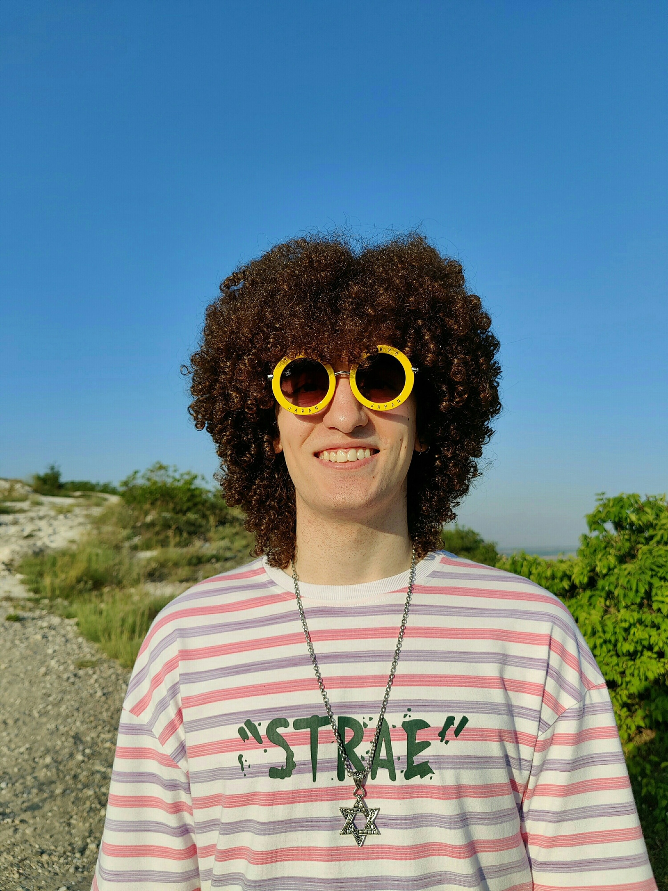

|  | Сибирко МаксимКак управлять вселенной, не привлекая внимания санитаров? |
Самый страшный пират, но удачно притворяется добрым. Характер общительный. Не женат.
Любимые виды времяпрепровождения:
- Чтение книг;
- Выполнение физических упражнений;
- Прогулки на свежем воздухе;
- Выращивание цветов;
- Просмотр сериалов.
Часто используемые онлайн-сервисы: